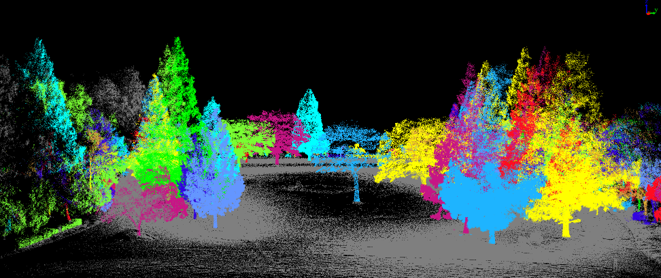

都市点群データによる資源量の定量化

車載LiDARや航空レーザなどから得られた都市点群データを用い、 樹木・建物・インフラなど都市に存在する多様な資源ストックを3Dで定量化します。
AIやアルゴリズムなどの手法を組み合わせ、 都市に眠る資源の可視化とポテンシャル評価を行っています。
長尾研究室では、都市に埋もれた「資源」と「情報」を可視化し、環境負荷の小さい社会・エネルギーシステムをデザインすることを目指しています。
長尾 征洋（Nagao Masahiro）准教授
名古屋大学 大学院環境学研究科 都市環境学専攻 環境機能物質学／情報学部 自然情報学科を担当。
燃料電池・バッテリー、バイオマス利用、機械学習、最適化計算などをキーワードに、環境負荷の小さいエネルギー・社会システムの設計に取り組んでいます。
詳細なプロフィールは名古屋大学研究者総覧（長尾征洋）をご覧ください。
当研究室では、以下のようなキーワードを軸に研究を行っています。
車載LiDARや航空レーザなどから得られた都市点群データを用い、 樹木・建物・インフラなど都市に存在する多様な資源ストックを3Dで定量化します。
AIやアルゴリズムなどの手法を組み合わせ、 都市に眠る資源の可視化とポテンシャル評価を行っています。
PLATEAUの3D都市モデルや点群データを用いて、都市空間をデジタル上に可視化するシステムを開発しています。
Unityを活用した日射・環境シミュレーション、WebGIS連携など、 都市データをわかりやすく伝える新しい可視化手法を探求しています。
アンケートデータに対して、多変量解析を適用し、環境配慮行動・健康行動などの決定要因を分析します。
これにより、都市資源の利用や食行動などに関する行動変容の仕組みを明らかにし、政策・施策設計に活かします。
これまでの卒業生の進路や、企業・官公庁・大学院進学などの実績を掲載しています。
※ ここには代表的な業績のみ掲載しています。フルリストは研究者総覧を参照ください。
| 住所 |
〒464-8602 名古屋市千種区不老町 全学教養棟220 および 環境総合館101 |
|---|---|
| 所属 |
名古屋大学 大学院環境学研究科 都市環境学専攻 長尾研究室 |
| 最寄駅 | 名古屋市営地下鉄 名城線「名古屋大学駅」徒歩圏 |
配属希望の学部生・大学院受験希望者・共同研究のご相談などは、以下の連絡先までお問い合わせください。
| 所在地 |
〒464-8602 名古屋市千種区不老町 全学教養棟220 および 環境総合館101 名古屋大学 大学院環境学研究科 都市環境学専攻 長尾研究室 |
|---|---|
|
nagao[at]urban.env.nagoya-u.ac.jp（長尾） nakamura.yuto.i3[at]f.mail.nagoya-u.ac.jp（中村） ※ [at] を @ に置き換えてください。 |